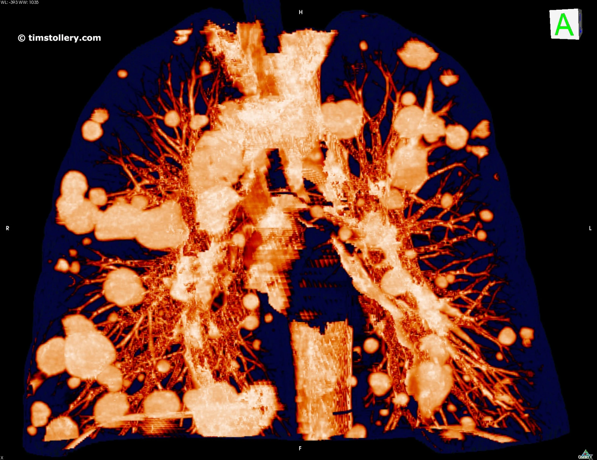

English
Čeština
Dansk
Deutsch
Español
Suomi
Français
Hrvatski
Magyar
Italiano
Norsk (bokmål)
Nederlands
Polski
Português (Portugal)
Slovenčina
Slovenščina
Svenska
Türkçe
← Volver a las imágenes 3D
Reconstrucción 3D 2 de OsiriX, creada con la tomografía del 10 de diciembre de 2004.

Reconstrucción 3D 2 de OsiriX, creada con la tomografía del 10 de diciembre de 2004.
← Imagen anterior
Volver a las exploraciones
Imagen siguiente →